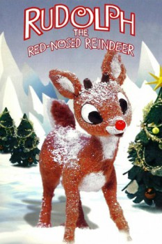

Country:United States, 52 minutes
Spoken languages:English
Genres:Animation, Family, Adventure, Fantasy
Director(s):Larry Roemer
Writer(s):Romeo Muller
Video Codec:Unknown
Number: 93

Certification:G
Storyline:
Sam the snowman tells us the story of a young red-nosed reindeer who, after being ousted from the reindeer games because of his glowing nose, teams up with Hermey, an elf who wants to be a dentist, and Yukon Cornelius, the prospector. They run into the Abominable Snowman and find a whole island of misfit toys. Rudolph vows to see if he can get Santa to help the toys, and he goes back to the North Pole on Christmas Eve. But Santa's sleigh is fogged in. But when Santa looks over Rudolph, he gets a very bright idea...
Cast:
Burl Ives (voice of Sam the Snowman), Billie Mae Richards (voice of Rudolph), Larry D. Mann (voice of Yukon Cornelius), Paul Soles (voice of Hermey), Stan Francis (voice of Santa Claus / King Moonracer)
Medium: Media file,
Location: D:\$RECYCLE.BIN\$RP4ESGP\Rudolph the Red Nosed Reindeer.mp4
Loaned: No
Aspect ratio: Unknown